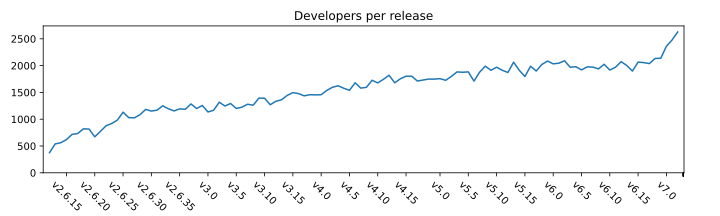
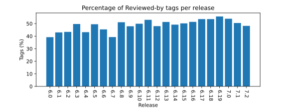
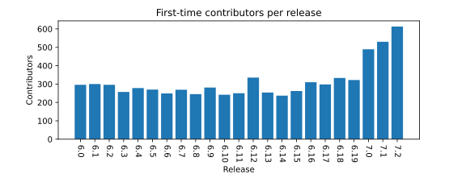
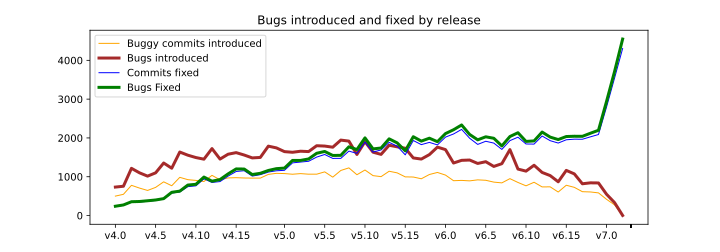

Development statistics for the 7.2 kernel
bigger than I would have wished for". In fact, 7.2 was one of the busiest development cycles in the kernel's history, adding nearly 600,000 lines of code. It's time to look at some statistics to get a handle on how the kernel's development community is changing.
There were 16,418 non-merge commits brought into the mainline for the 7.2 release, exceeding the (already busy) 7.1 release; it is, in fact, the second-busiest release in the kernel's history. Only the 6.7 release brought in more commits but, while 6.7 was dominated by the merging of the bcachefs development history, the volume for 7.2 is more broad-based.
These commits were contributed by 2,652 developers, a big increase over the previous record (2,479 in 7.1). If one looks at the history of developer involvement since the beginning of the Git era, the result is:

(This plot, like much of the information here, comes from the subscriber-only LWN Kernel Source Database). There has been a clear trend over that entire history: the number of developers contributing to each release increases over time. But the slope of that line has clearly changed.
The most active developers working on 7.2 were:
Most active 7.2 developers
By changesets Uwe Kleine-König 151 0.9% Rosen Penev 146 0.9% Ian Rogers 138 0.8% Johan Hovold 133 0.8% Arnaldo Carvalho de Melo 131 0.8% Chuck Lever 129 0.8% Eric Dumazet 121 0.7% Ville Syrjälä 115 0.7% Johannes Berg 112 0.7% Krzysztof Kozlowski 110 0.7% Thorsten Blum 108 0.7% Namjae Jeon 106 0.6% Christoph Hellwig 104 0.6% Sean Christopherson 100 0.6% Jakub Kicinski 96 0.6% SJ Park 94 0.6% Mike Rapoport 91 0.6% Dmitry Baryshkov 87 0.5% Eric Biggers 86 0.5% Rafael J. Wysocki 78 0.5%
By changed lines Matthew Stewart 83587 8.4% Hawking Zhang 62893 6.3% Miguel Ojeda 38979 3.9% Ian Rogers 31949 3.2% Darren Ye 20843 2.1% Ethan Nelson-Moore 16893 1.7% Harry Wentland 15233 1.5% Uwe Kleine-König 13803 1.4% Ingo Molnar 13649 1.4% Chuck Lever 10172 1.0% Eric Biggers 10067 1.0% Jakub Kicinski 9449 0.9% Rodrigo Siqueira 7749 0.8% Johannes Berg 7110 0.7% Arnd Bergmann 7085 0.7% Emil Tsalapatis 6810 0.7% Vivek Aknurwar 6544 0.7% Rob Clark 6490 0.6% Sabrina Dubroca 6401 0.6% Svyatoslav Ryhel 6072 0.6%
Uwe Kleine-König [KSDB] was the biggest contributor of commits to the 7.2 release with cleanups through the driver subsystem. Rosen Penev [KSDB] contributed a long list of LLM-authored bug fixes throughout the architecture-specific, driver, networking, and crypto subsystems, among others. Ian Rogers [KSDB] worked extensively on the user-space perf tool, as did Arnaldo Carvalho de Melo [KSDB]. Johan Hovold [KSDB] made numerous improvements, mostly in the SPI and USB subsystems.
Matthew Stewart [KSDB] reached the top of the lines-changed column by following the time-honored tradition of adding more massive, machine-generated amdgpu header files; Hawking Zhang [KSDB] did likewise. Miguel Ojeda [KSDB] brought the Rust zerocopy crate into the kernel source. Darren Ye [KSDB] added the MediaTek mt8196 sound driver.
Just over 8% of the commits in 7.2 carried Tested-by tags, while 48% included Reviewed-by tags. The review tags, in particular, are showing a mild downward trend in recent releases:

Whether that decline reflects an actual decrease in the amount of review taking place is unclear at best. In any case the most active testers and reviews for this cycle were:
Test and review credits in 7.2
Tested-by Dan Wheeler 117 7.0% Luiz Capitulino 54 3.2% James Clark 44 2.6% Sarthak Sharma 44 2.6% Venkat Rao Bagalkote 32 1.9% Tommaso Merciai 27 1.6% David Riley 27 1.6% Jie Gan 27 1.6% Geert Uytterhoeven 25 1.5% Arthur Kiyanovski 25 1.5% Marek Szyprowski 25 1.5% Randy Dunlap 24 1.4% Shivaprasad G Bhat 24 1.4% Rinitha S 21 1.3% Vitaly Prosyak 20 1.2%
Reviewed-by Konrad Dybcio 231 2.2% Dmitry Baryshkov 225 2.1% Andy Shevchenko 175 1.7% Geert Uytterhoeven 171 1.6% Krzysztof Kozlowski 152 1.5% Frank Li 147 1.4% Ilpo Järvinen 145 1.4% Christoph Hellwig 143 1.4% Jan Kara 121 1.2% Christian König 120 1.1% Linus Walleij 116 1.1% Alex Deucher 105 1.0% Simon Horman 102 1.0% Jeff Layton 101 1.0% Ido Schimmel 94 0.9%
Dan Wheeler [KSDB] is, as always, the top tester by virtue of his work with AMD graphics-driver patches. On the review side, Konrad Dybcio [KSDB] added his tag to 231 changes while Dmitry Baryshkov [KSDB] tagged 225; the same two, who both tend to focus on drivers and devicetree files for Qualcomm devices, were at the top of that list for the 7.1 cycle as well.
Work on the 7.2 kernel was supported by 249 employers that we were able to identify; the most active of those were:
Most active 7.2 employers
By changesets (Unknown) 2743 16.7% Intel 1512 9.2% 1191 7.3% Red Hat 873 5.3% AMD 813 5.0% Qualcomm 767 4.7% (None) 743 4.5% NVIDIA 535 3.3% Meta 441 2.7% (Consultant) 429 2.6% SUSE 358 2.2% Renesas Electronics 328 2.0% IBM 307 1.9% Kylin 278 1.7% NXP Semiconductors 264 1.6% Oracle 245 1.5% Arm 222 1.4% BayLibre 203 1.2% Microsoft 201 1.2% Bootlin 194 1.2%
By lines changed AMD 224121 22.4% (Unknown) 103861 10.4% 102565 10.3% Qualcomm 59021 5.9% Intel 53661 5.4% Red Hat 51559 5.2% Meta 38635 3.9% (None) 28218 2.8% NVIDIA 27417 2.7% MediaTek 22025 2.2% NXP Semiconductors 17692 1.8% BayLibre 15972 1.6% Oracle 12233 1.2% Microsoft 11786 1.2% Renesas Electronics 11103 1.1% Linaro 10209 1.0% (Consultant) 9362 0.9% IBM 9205 0.9% Texas Instruments 8398 0.8% SUSE 8350 0.8%
The most significant change this time around, arguably, is the significant increase in developers with unknown affiliation. This is partially, at least, a reflection of the ongoing flood of new developers entering the kernel community.
New developers and their tools
Each of the previous two kernel releases had set a record for the number of first-time developers contributing changes; 7.2 has broken that record again, with 613 contributors [KSDB] who had not been seen here before. Here, once again, the trend is clear:

The most active new developer was Bryam Vargas [KSDB], who contributed 43 commits fixing problems in the input, NVMe, F2FS, AppArmor, Landlock, SELinux, NTFS, WiFi, ATA, SCSI, networking, Ceph, and Thunderbolt subsystems, among others. As has been observed here before, it would be difficult for a seasoned kernel developer to reach deeply into that many subsystems over the course of a single development cycle — at least, if they wanted to understand what they are doing. For a previously unknown developer to do this is surprising at best. Vargas's patches do not carry Assisted-by tags, though, so we are left to believe that this work was done without LLM assistance.
Overall, 1,111 changes in 7.2 (under 7% of the total) carried Assisted-by tags — a significant increase over the 301 seen in 7.1. The real count of LLM-assisted patches in 7.2 must surely be far higher than that, though. Many developers do not supply those tags (often — but not always — out of ignorance of the rules), maintainers rarely ask about LLM use, and at least one maintainer actively strips those tags when applying patches. Accurately tracking commits developed with LLM assistance may turn out not to be possible, but it sometimes feels like the kernel community does not care enough to really try.
The other way in which LLM usage is making itself felt in kernel development is in the area of patch review. There are 252 patches in 7.2 with Reported-by tags crediting the Sashiko review system [KSDB]; 568 commits mention Sashiko in their changelogs. Other LLMs are also clearly being used to find kernel bugs, though, with real effects.
The 7.2 release contains 4,830 commits with Fixes tags, indicating that they fix a bug introduced by a previous commit. To see just how significant an increase is, consider this plot, an updated version of one that has been seen here before (most recently for the 6.17 development cycle):

The heavy green line plots how many commits in each release contained Fixes tags, while the heavy brown line is the number of commits that were identified by Fixes tags in subsequent commits. The crossover point is at 5.9, suggesting that, as of that release, the kernel community started fixing more bugs than it introduced. That conclusion will not hold, though; it will take years for all of the post-5.9 bugs to be identified and fixed, and that line will shift as it happens.
The noteworthy part of the plot, though, is at the right-hand side, where the number of commits carrying Fixes tags increases dramatically, after having been roughly level for quite a few releases. That, it seems, is what happens once large numbers of people start turning LLMs toward the task of finding bugs in existing software. This is going to be an interesting trend to watch. The number of bugs cannot be infinite — even in the kernel — so the rate of bug detection and fixing must eventually fall off. The existing bugs will have been fixed, and LLM review will have reduced the number of new bugs introduced. At least, that is the hope.
If that drop-off does not happen, there will be some interesting questions to answer. It seems reasonably clear that the spread of LLMs has enabled people to create kernel patches who would not have been capable of doing so before. If that is true, it is not much of a stretch to conclude that, in many cases, the submitters of these patches do not fully understand what those patches do. Perhaps the LLMs are good enough that this understanding is no longer necessary, but it could also be that we are creating a pile of code that nobody has ever really understood, but which will need to be maintained in the coming years.
The Linux kernel is aimed at production use, not research or experimentation. But there is currently a massive experiment being run on the kernel's development processes and community. This community has absorbed new processes and tools many times over its 35-year history, and will almost certainly find a way to do that this time as well. But that absorption has not always been without turbulence along the way.
Meanwhile, there are nearly 14,000 non-merge changesets sitting in
the linux-next repository and poised to be pulled for the 7.3 release; over
1,100 of them contain Assisted-by tags. It would seem that the high level
of activity that has characterized recent releases will not be ending
anytime soon. As always, keep an eye on LWN as we follow the next
development cycle (and those that come after).
| Index entries for this article | |
|---|---|
| Kernel | Development tools/Large language models |
| Kernel | Releases/7.2 |
Posted Aug 17, 2026 19:04 UTC (Mon)
by krisman (subscriber, #102057)
[Link]
$ du -h --max-depth=0 drivers/
If they just used some pre-processor to handle the define prefixes, it would be less than 1/2 the size. Actually, if they used a single space instead of aligning #defines to the same column in the machine-generated definitions, they'd save *approximately*[1] 180MB in *whitespace* out of each git-checkout out there.
[1] Approximately. Just tested with a 'tr -s " "' in drivers/gpu/drm/amd/include).
Posted Aug 17, 2026 20:44 UTC (Mon)
by jpeisach (subscriber, #181966)
[Link] (20 responses)
Posted Aug 17, 2026 20:46 UTC (Mon)
by corbet (editor, #1)
[Link] (11 responses)
What it comes down to is that both metrics are terrible, I have long wished I could come up with better one.
Posted Aug 18, 2026 10:29 UTC (Tue)
by epa (subscriber, #39769)
[Link]
That metric can still be gamed deliberately, by committing random data, but otherwise it should do a good job capturing real changes.
Posted Aug 28, 2026 8:39 UTC (Fri)
by alx.manpages (subscriber, #145117)
[Link] (9 responses)
Not so easily. One can write a function, and split it into one commit per line of code, theoretically, but that's certainly not going to be applied by any maintainers.
A commit must make sense on its own, and this means there's a limit to the number of commits in which you can split a patch set. And contributors often fall short of this limit.
I believe that the more split a patch set is, the more quality it tends to have (until a limit, after which it degrades, but even there it degrades slowly), as it is harder to justify each small change, and if the justification is there, it is quite robust. On the other hand, large patches tend to have many details that aren't well thought.
Number of lines of code is still interesting, though. But in a negative sense. Large numbers of LoC with small numbers of commits tells me there's a lot of slop (human or LLM). It's low quality work.
> What it comes down to is that both metrics are terrible, I have long wished I could come up with better one.
To me, the number of commits shows the amount of work, and the number of LoC (relative to the number of commits) shows an inverse of the quality of that work.
Posted Aug 28, 2026 12:56 UTC (Fri)
by alx.manpages (subscriber, #145117)
[Link] (5 responses)
Out of curiosity, I checked what results this would give in the existing kernel code. Here's an analysis of the entire (excluding pre-git) linux.git history. First, I created a shortlog (at the moment my copy seems to be checking out, which is 0e35b9b6ec0f (2026-07-06; "Merge tag 'mm-hotfixes-stable-2026-07-06-17-49' of git://git.kernel.org/pub/scm/linux/kernel/git/akpm/mm")): Then I edited manually to keep only those with 5k commits or more, which gives us 28 authors. Then I created another file with the LoC additions, deletions, and net total for each of those authors, using the script from https://stackoverflow.com/a/7010890/6872717 with some minor changes. Then I manually edited that to get a format I liked more, and then I paste(1)d both files: After some manual white-space alignment, I also added manually a division between the net total and the number of commits, to see a ratio. It looks like this: From this list, I suspect (without knowing the work of most of them) I'd like Dan Carpenter's work most. At +4/-4 LoC per patch and a net total of In general, I also expect I'll tend to like the most those with single-digit ratios, and also those with negative ratios (regardless of their absolute value). In some cases, large negative ratios are due to removals of entire files, which masks a little bit the other work of those contributors, but removing entire files is per se a good thing (especially, if the functionality remains). Having said this, I'm also curious to check myself. Here are the same statistics for the contributors to shadow-utils that have more than 100 commits: My ratio is negative and 2-digit. It's a bit larger than it used to be, due to the recent removal of entire programs and features in 4.20.0, but even before those removals, I had been proud of keeping a negative ratio (except for a few times, my ratio used to be consistently negative and single-digit). And here are same statistics for the contributors to the Linux man-pages that have more than 100 commits: I'm proud of maintaining that ratio single-digit even after so many additions.
Posted Aug 28, 2026 12:58 UTC (Fri)
by alx.manpages (subscriber, #145117)
[Link] (1 responses)
Posted Aug 28, 2026 15:50 UTC (Fri)
by alx.manpages (subscriber, #145117)
[Link]
Linus Torvalds's statistics were incorrect due to the first git commit. Not counting it, her has:
```
The other correction is trivial: David S. Miller's ratio is 1.60 (instead of 1.6). The second digit of precision (ignoring the leading '1') is indeed 0. I forgot to type it.
Posted Aug 28, 2026 13:06 UTC (Fri)
by alx.manpages (subscriber, #145117)
[Link] (1 responses)
Posted Aug 31, 2026 9:54 UTC (Mon)
by taladar (subscriber, #68407)
[Link]
Posted Aug 28, 2026 13:26 UTC (Fri)
by alx.manpages (subscriber, #145117)
[Link]
Here are the same statistics for v7.2, for contributors over 100 commits: I should have excluded merge commits from these statistics. Linus has some weird numbers due to those.
Posted Aug 28, 2026 15:25 UTC (Fri)
by corbet (editor, #1)
[Link] (2 responses)
Posted Aug 28, 2026 19:59 UTC (Fri)
by alx.manpages (subscriber, #145117)
[Link] (1 responses)
I've personally never seen a case where I've received too-small patches, and instead have had plenty of times where I've had to insist contributors that they split their bloated commits (often met with resistance from contributors). I'd love to see people golfing for the smallest commits, at least if I have to review them! :)
On the other hand, inflating (positive) LoC directly and negatively impacts review.
(One thing I'd also love to see is people competing for removing the most lines of code code.) :D
Posted Aug 28, 2026 21:18 UTC (Fri)
by mb (subscriber, #50428)
[Link]
Please no obfuscated C contest in real projects ;-)
Posted Aug 17, 2026 21:45 UTC (Mon)
by kazer (subscriber, #134462)
[Link] (7 responses)
Line counts never were useful for anything other than telling the amount of lines..
If you have a better idea of how to describe hardware registers in C code then do tell.
Posted Aug 17, 2026 23:48 UTC (Mon)
by rgmoore (✭ supporter ✭, #75)
[Link] (6 responses)
I think the point is that you shouldn't be including autogenerated files unless they're tweaked by hand after being generated. If they're left as the generator made them, the input to the generator is the real source code, and the output is just an intermediate in compilation. This is what the GPL is talking about when it defines source as the preferred form for making modifications. If the script that autogenerates the files is slow, so you're only including them for time savings, you should still include the original input to the generator so people can make changes if they want.
Posted Aug 18, 2026 2:06 UTC (Tue)
by bojan (subscriber, #14302)
[Link] (4 responses)
Posted Aug 18, 2026 8:10 UTC (Tue)
by epa (subscriber, #39769)
[Link] (3 responses)
Since LLMs are nondeterministic by design, you can’t regenerate output given just a prompt. It might still be useful to include the prompt or conversation with the AI, perhaps as part of the commit message.
Posted Aug 18, 2026 12:24 UTC (Tue)
by dskoll (subscriber, #1630)
[Link] (2 responses)
Perhaps generated C code can be marked as such and not included in the "lines changed" part? And maybe the source file from which it was generated could be included in the git repo, even if the tools to generate the C from the source are not included.
Posted Aug 18, 2026 12:56 UTC (Tue)
by farnz (subscriber, #17727)
[Link] (1 responses)
Posted Aug 18, 2026 13:21 UTC (Tue)
by dskoll (subscriber, #1630)
[Link]
Ah, OK. Well, then at least somehow marking the file as auto-generated would be helpful.
Posted Aug 31, 2026 8:18 UTC (Mon)
by kazer (subscriber, #134462)
[Link]
Theoretically, but the hardware description files (VHDL? Verilog? something else?) would be huge as well and only marginally useful for the kernel itself. And there would be other issues as well..
Posted Aug 17, 2026 22:45 UTC (Mon)
by alx.manpages (subscriber, #145117)
[Link]
> This is going to be an interesting trend to watch.
Certainly.
> The number of bugs cannot be infinite — even in the kernel — so the rate of bug detection and fixing must eventually fall off.
That's not necessarily true. If bugs would increase faster than previously (which might happen), the rate of bug detection might remain high.
Or maybe detection would decrease if the new classes of LLM-induced bugs are harder to notice (at least by LLMs), which would be worse than having high introduction and detection.
> The existing bugs will have been fixed, and LLM review will have reduced the number of new bugs introduced.
I have concerns that LLM review might decrease the quality of human review, especially in the long term.
> At least, that is the hope.
I hope it happens, but I don't expect it.
Posted Aug 18, 2026 12:54 UTC (Tue)
by PengZheng (subscriber, #108006)
[Link]
Posted Oct 17, 2026 18:31 UTC (Sat)
by bradfitz (subscriber, #4378)
[Link] (6 responses)
I was debugging why I was getting packet loss in a router and asked Claude to look into it and it quickly fixed it. While reading back through its chat log I saw it saying "Oh, that's just a bug in Linux, they accidentally wrote '=' instead of '|=' in one of the cases and overwrote some bits by accident. We'll just work around it...." so I pushed back and was like, "Uh, can't we just fix the bug upstream in Linux instead so we don't need to work around it?"
So then I had to go learn the netdev contribution rules & b4 and all that fun stuff, and make a selftest and send out that patch series.
I've contributed to countless open source project but Linux was always the scariest one and I'd been dreading having to send something upstream for ages. But it wasn't terrible.
But it always wasn't my proudest moment, just shuttling around an operator typo fix that a machine found as an casual aside.
But, uh, yay?
Weird new world.
Posted Oct 17, 2026 19:23 UTC (Sat)
by gnoack (subscriber, #131611)
[Link] (4 responses)
Hearing that story does make me wonder what extent of these inflated contribution numbers are bugfixes. The LLMs have after all proven to be quite good at spotting bugs. (And also to casually familiarize themselves with the whole tech stack, if that is what it takes to solve a problem 😬)
But as you said yourself, they are prone to work around the issues deeper in the tech stack instead of reaching out to these projects. I wish this were different by default. (I see this a lot also in a library that I maintain where LLM authored usages have shown to have a higher tendency to use raw syscalls instead of reaching out when something in the library doesn't work for their use case.)
Posted Oct 17, 2026 21:51 UTC (Sat)
by bradfitz (subscriber, #4378)
[Link]
I mostly know you from https://github.com/golang/go/issues/68595 etc :)
(I'm still on the Go Proposal Review Committee, nearly 7 years after leaving Google :))
Posted Oct 18, 2026 9:10 UTC (Sun)
by kleptog (subscriber, #1183)
[Link] (1 responses)
Indeed. At $DAYJOB we have a bunch of projects which are variations on a theme: they implement a standard API for different products. For fun I decided the ask the AI agent to look at all the codebases and reverse engineer the standard patterns and requirements. It spent some time in this and came up with a good list (needed some tweaking and corrections). And occasionally it made comments like: we do A everywhere except for product B we do it differently. I'm like 'huh?' and look at it and it's just a bug.
After that I asked it to go through all the code again, this time flagging all the cases where the code wasn't matching the standard patterns. It turned up a whole raft of stupid bugs.
I can imagine doing this same exercise for the drivers in the Linux kernel would reveal truckloads of stupid bugs, while clarifying the documentation as a side effect.
It's worth noting that the only reason the LLM could find the bug in the Linux kernel is because it's open source. A similar bug in Windows would just have to be worked around.
Working around an issue rather than fixing it upstream is the Platform Problem. It exists because contributing fixes to upstream is more work than working around it, and you need your code to work while the fix upstream gets deployed everywhere. It will only go away if it becomes easier to get changes upstream, but right now it only appears to be getting harder, not easier.
Posted Oct 18, 2026 11:41 UTC (Sun)
by pizza (subscriber, #46)
[Link]
It's easy to picture it finding bugs in its use of the Linux APIs, but actual hardware is full of nonstandard weirdness, even before inevitable HW errata come into play.
Posted Oct 19, 2026 11:11 UTC (Mon)
by taladar (subscriber, #68407)
[Link]
Posted Oct 17, 2026 23:19 UTC (Sat)
by jake (editor, #205)
[Link]
Anyone curious about the patch series (as I was) can find it here:
https://lwn.net/ml/netdev/20261011-bradfitz-gre-fou-gro-b...
jake
AMD!
1.2G drivers/
$ du -h --max-depth=0 drivers/gpu/drm/amd/include
491M drivers/gpu/drm/amd/include
Time to reconsider "lines changed"?
Honestly, the number of commits is just as easily inflated that way.
Time to reconsider "lines changed"?
Time to reconsider "lines changed"?
Time to reconsider "lines changed"?
Time to reconsider "lines changed"?
$ time git shortlog -s | sort > linux.shortlog;
real 0m10.316s
user 0m9.829s
sys 0m0.488s
$ cat linux+5000.shortlog;
5122 Russell King
5217 Kent Overstreet
5261 Alex Deucher
5542 Dave Airlie
5648 Kuninori Morimoto
5742 Dan Carpenter
5866 Uwe Kleine-König
5942 H Hartley Sweeten
6010 Eric Dumazet
6067 Rafael J. Wysocki
6219 Ville Syrjälä
6394 Andy Shevchenko
6448 Ingo Molnar
6473 Chris Wilson
6931 Johannes Berg
7018 Geert Uytterhoeven
7475 Thomas Gleixner
7734 Greg Kroah-Hartman
7928 Jakub Kicinski
8237 Al Viro
8272 Krzysztof Kozlowski
8784 Mauro Carvalho Chehab
10100 Takashi Iwai
10623 Christoph Hellwig
11107 Mark Brown
12572 Arnd Bergmann
15662 David S. Miller
46174 Linus Torvalds
$ time cat linux+5000.shortlog \
| cut -f2 \
| while read author; do
git log --author="$author" --pretty=tformat: --numstat \
| gawk '{ add += $1; subs += $2; loc += $1 - $2 } END { printf "+%s, -%s; = %s\n", add, subs, loc }' - \
>>linux+5000.stat;
done;
real 6m52.151s
user 6m29.544s
sys 0m13.579s
$ paste linux+5000.s[ht]* > linux+5000.paste
$
$ cat linux+5000.paste
5122 Russell King +184235, -143104; = 41131; =/ 8.0
5217 Kent Overstreet +300316, -169273; = 131043; =/ 25
5261 Alex Deucher +1408449, -111137; = 1297312; =/ 250
5542 Dave Airlie +154738, -108454; = 46284; =/ 8.4
5648 Kuninori Morimoto +169261, -91488; = 77773; =/ 13.8
5742 Dan Carpenter +19599, -20130; = -531; =/ -0.09
5866 Uwe Kleine-König +88605, -289043; = -200438; =/ -34
5942 H Hartley Sweeten +125006, -197207; = -72201; =/ -12.2
6010 Eric Dumazet +99587, -78051; = 21536; =/ 3.56
6067 Rafael J. Wysocki +112202, -75543; = 36659; =/ 6.0
6219 Ville Syrjälä +158922, -110333; = 48589; =/ 7.8
6394 Andy Shevchenko +82318, -130279; = -47961; =/ -7.5
6448 Ingo Molnar +140653, -126211; = 14442; =/ 2.2
6473 Chris Wilson +233877, -156775; = 77102; =/ 11.9
6931 Johannes Berg +322363, -252874; = 69489; =/ 10.0
7018 Geert Uytterhoeven +152144, -115110; = 37034; =/ 5.3
7475 Thomas Gleixner +197993, -300618; = -102625; =/ 13.7
7734 Greg Kroah-Hartman +927545, -1853403; = -925858; =/ -119
7928 Jakub Kicinski +184705, -304807; = -120102; =/ -15.1
8237 Al Viro +147032, -197345; = -50313; =/ -6.1
8272 Krzysztof Kozlowski +153725, -126351; = 27374; =/ 3.3
8784 Mauro Carvalho Chehab +917701, -700541; = 217160; =/ 25
10100 Takashi Iwai +292386, -329646; = -37260; =/ -3.7
10623 Christoph Hellwig +320440, -603796; = -283356; =/ -27
11107 Mark Brown +302309, -134252; = 168057; =/ 15.1
12572 Arnd Bergmann +112446, -962395; = -849949; =/ -68
15662 David S. Miller +188420, -163354; = 25066; =/ 1.6
46174 Linus Torvalds +6805644, -225103; = 6580541; =/ 143
-0.09, those patches must be quite readable and effective. And indeed, peeking at his commits they seem to be enjoyable.$ cat shadow+100.paste
125 Tobias Stoeckmann +2489, -1624; = 865; =/ 6.9
315 Iker Pedrosa +15469, -27299; = -11830; =/ -38
480 Serge Hallyn +598130, -180211; = 417919; =/ 870
1063 Alejandro Colomar +22749, -41660; = -18911; =/ -17.8
1666 nekral-guest +829212, -541427; = 287785; =/ 173
$ cat man+100.paste
108 Zeng Linggang +2179, -0; = 2179; =/ 20
116 Marko Myllynen +2311, -1143; = 1168; =/ 10.1
124 David Prévot +429, -414; = 15; =/ 0.121
127 наб +1717, -1115; = 602; =/ 4.7
131 Seth McDonald +452, -152; = 300; =/ 2.3
146 Ma Shimiao +1611, -72; = 1539; =/ 10.5
254 Jakub Wilk +593, -580; = 13; =/ 0.051
492 Peng Haitao +4552, -1031; = 3521; =/ 7.2
4157 Alejandro Colomar +192185, -162816; = 29369; =/ 7.1
18790 Michael Kerrisk +737560, -442728; = 294832; =/ 15.7
Time to reconsider "lines changed"?
Time to reconsider "lines changed"?
$ git log --author="Linus Torvalds" 8d38eadb7a97..HEAD --pretty=tformat: --numstat \
| gawk '{ add += $1; subs += $2; loc += $1 - $2 } END { printf "+%s, -%s; = %s\n", add, subs, loc }' -;
+86913, -225194; = -138281
```
And that's a ratio of -3.0 (this makes more sense).
Time to reconsider "lines changed"?
Time to reconsider "lines changed"?
Time to reconsider "lines changed"?
$ cat linux7.2+100.paste
100 Sean Christopherson +1902, -1655; = 247; =/ 2.5
104 Christoph Hellwig +3505, -3112; = 393; =/ 3.8
106 Namjae Jeon +3668, -1362; = 2306; =/ 21
108 Thorsten Blum +624, -693; = -69; =/ -0.64
110 Mark Brown +245, -76; = 169; =/ 1.54
115 Ville Syrjälä +2087, -1608; = 479; =/ 4.2
121 Eric Dumazet +1728, -1236; = 492; =/ 4.1
124 Johannes Berg +6757, -3393; = 3364; =/ 27
125 Krzysztof Kozlowski +1294, -671; = 623; =/ 5.0
130 Chuck Lever +5259, -6194; = -935; =/ -7.2
133 Arnaldo Carvalho de Melo +3426, -721; = 2705; =/ 20
133 Johan Hovold +999, -1628; = -629; =/ -4.7
134 Arnd Bergmann +1009, -6771; = -5762; =/ -43
138 Ian Rogers +31447, -8130; = 23317; =/ 169
144 Uwe Kleine-König (The Capable Hub) +11569, -11070; = 499; =/ 3.5
146 Rosen Penev +862, -1651; = -789; =/ 5.4
313 Jakub Kicinski +2169, -8097; = -5928; =/ -18.9
490 Linus Torvalds +10, -89; = -79; =/ -0.161
Over the years, there have definitely been individuals and companies that have sought to inflate their commit counts...it's the sort of thing that has made me wonder if publishing that information was, in the end, a good thing. I even talked with Linus about it once, years ago, but he thought the value exceeded the cost of the "the metric has become a target" behavior.
Time to reconsider "lines changed"?
Time to reconsider "lines changed"?
Time to reconsider "lines changed"?
Time to reconsider "lines changed"?
Time to reconsider "lines changed"?
Time to reconsider "lines changed"?
Time to reconsider "lines changed"?
Time to reconsider "lines changed"?
There may not be a source file that the register definitions are generated from; it's not uncommon in EDA workflows for all of the HDL sources to be compiled into a database, and for the generated C code to come from a templated database query against the database that contains the entire chip description.
Source files for register definitions
Source files for register definitions
Time to reconsider "lines changed"?
Hope
> Where is Huawei
Accidental Linux kernel contributor
Accidental Linux kernel contributor
Accidental Linux kernel contributor
Accidental Linux kernel contributor
Accidental Linux kernel contributor
Accidental Linux kernel contributor
Accidental Linux kernel contributor
> and make a selftest and send out that patch series.